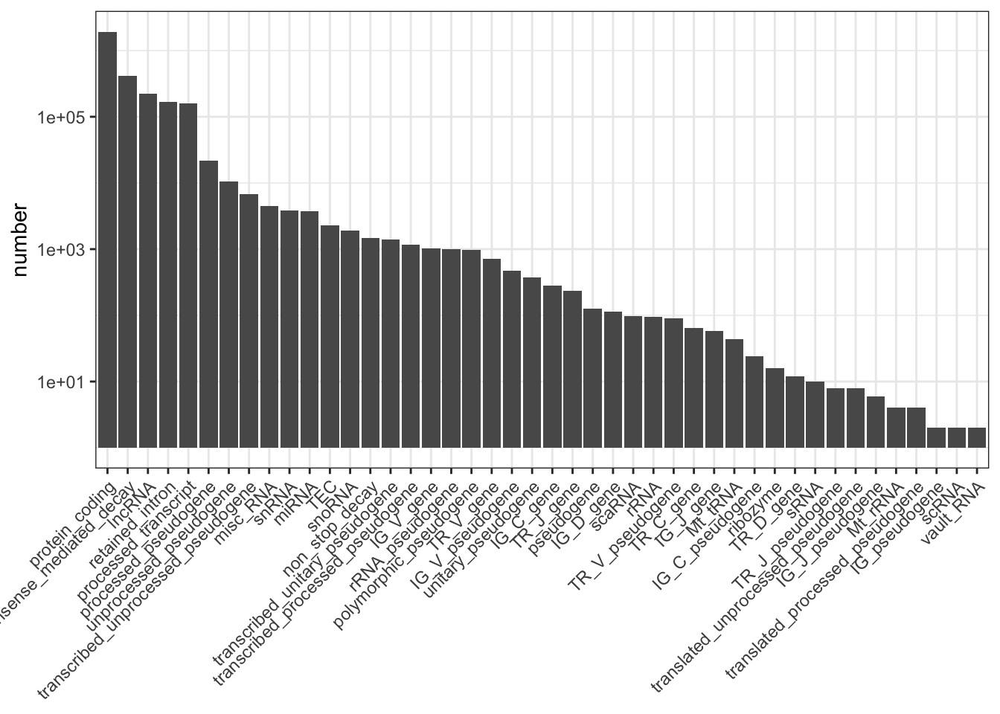
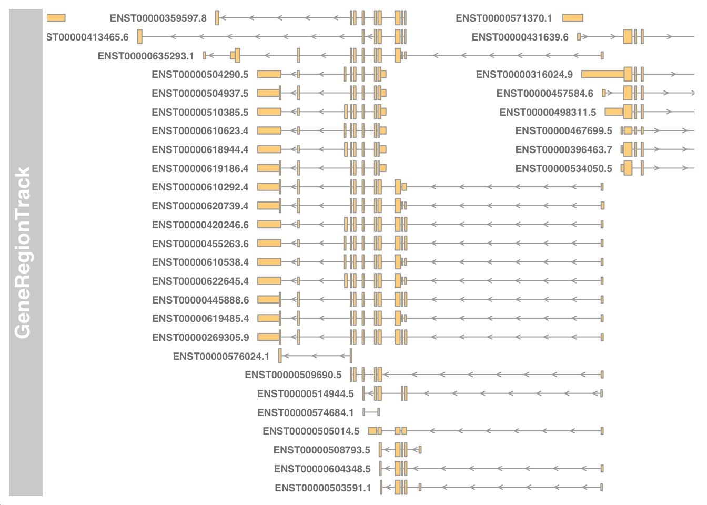

Last updated: 2020-12-01
Checks: 7 0
Knit directory: muse/
This reproducible R Markdown analysis was created with workflowr (version 1.6.2). The Checks tab describes the reproducibility checks that were applied when the results were created. The Past versions tab lists the development history.
Great! Since the R Markdown file has been committed to the Git repository, you know the exact version of the code that produced these results.
Great job! The global environment was empty. Objects defined in the global environment can affect the analysis in your R Markdown file in unknown ways. For reproduciblity it’s best to always run the code in an empty environment.
The command set.seed(20200712) was run prior to running the code in the R Markdown file. Setting a seed ensures that any results that rely on randomness, e.g. subsampling or permutations, are reproducible.
Great job! Recording the operating system, R version, and package versions is critical for reproducibility.
Nice! There were no cached chunks for this analysis, so you can be confident that you successfully produced the results during this run.
Great job! Using relative paths to the files within your workflowr project makes it easier to run your code on other machines.
Great! You are using Git for version control. Tracking code development and connecting the code version to the results is critical for reproducibility.
The results in this page were generated with repository version acb1733. See the Past versions tab to see a history of the changes made to the R Markdown and HTML files.
Note that you need to be careful to ensure that all relevant files for the analysis have been committed to Git prior to generating the results (you can use wflow_publish or wflow_git_commit). workflowr only checks the R Markdown file, but you know if there are other scripts or data files that it depends on. Below is the status of the Git repository when the results were generated:
Ignored files:
Ignored: .Rhistory
Ignored: .Rproj.user/
Ignored: analysis/.Rhistory
Untracked files:
Untracked: analysis/linear_regression.Rmd
Untracked: data/gencode.v36.annotation.gtf.gz
Note that any generated files, e.g. HTML, png, CSS, etc., are not included in this status report because it is ok for generated content to have uncommitted changes.
These are the previous versions of the repository in which changes were made to the R Markdown (analysis/read_gtf.Rmd) and HTML (docs/read_gtf.html) files. If you’ve configured a remote Git repository (see ?wflow_git_remote), click on the hyperlinks in the table below to view the files as they were in that past version.
| File | Version | Author | Date | Message |
|---|---|---|---|---|
| Rmd | acb1733 | davetang | 2020-12-01 | Read GTF files into R |
The Gene Transfer Format (GTF) is a refinement of the General Feature Format (GFF). A GFF file has nine columns:
| Column | Description |
|---|---|
| seqname | The name of the sequence; must be a chromosome or scaffold |
| source | The program that generated this feature |
| feature | The name of this type of feature, e.g. “CDS”, “start_codon”, “stop_codon”, and “exon” |
| start | The starting position of the feature in the sequence; the first base is numbered 1 |
| end | The ending position of the feature (inclusive) |
| score | A score between 0 and 1000 |
| strand | Valid entries include “+”, “-”, or “.” |
| frame | If the feature is a coding exon, frame should be a number between 0-2 that represents the reading frame of the first base. If the feature is not a coding exon, the value should be “.” |
| group | All lines with the same group are linked together into a single item |
The first eight fields in a GTF file are the same as GFF but the group field has been expanded into a list of attributes, where each attribute consists of a type/value pair. Attributes must end in a semi-colon and be separated from any following attribute by exactly one space. The attribute list must begin with the two mandatory attributes:
To get started, I will use the latest GENCODE GTF file.
gencode_ver <- 36
my_url <- paste0("ftp://ftp.ebi.ac.uk/pub/databases/gencode/Gencode_human/release_", gencode_ver, "/gencode.v", gencode_ver, ".annotation.gtf.gz")
my_gtf <- basename(my_url)
if (!file.exists(paste0("data/", my_gtf))){
download.file(url = my_url, destfile = paste0("data/", my_gtf))
}We will use rtracklayer to import the GTF file into R.
library(rtracklayer)Loading required package: GenomicRangesLoading required package: stats4Loading required package: BiocGenericsLoading required package: parallel
Attaching package: 'BiocGenerics'The following objects are masked from 'package:parallel':
clusterApply, clusterApplyLB, clusterCall, clusterEvalQ,
clusterExport, clusterMap, parApply, parCapply, parLapply,
parLapplyLB, parRapply, parSapply, parSapplyLBThe following objects are masked from 'package:stats':
IQR, mad, sd, var, xtabsThe following objects are masked from 'package:base':
anyDuplicated, append, as.data.frame, basename, cbind, colnames,
dirname, do.call, duplicated, eval, evalq, Filter, Find, get, grep,
grepl, intersect, is.unsorted, lapply, Map, mapply, match, mget,
order, paste, pmax, pmax.int, pmin, pmin.int, Position, rank,
rbind, Reduce, rownames, sapply, setdiff, sort, table, tapply,
union, unique, unsplit, which, which.max, which.minLoading required package: S4Vectors
Attaching package: 'S4Vectors'The following object is masked from 'package:base':
expand.gridLoading required package: IRangesLoading required package: GenomeInfoDbmy_obj <- import(paste0("data/", my_gtf))
class(my_obj)[1] "GRanges"
attr(,"package")
[1] "GenomicRanges"The GenomicRanges package serves as the foundation for representing genomic locations within the Bioconductor project. The GRanges class represents a collection of genomic features that each have a single start and end location on the genome. This includes features such as contiguous binding sites, transcripts, and exons.
my_objGRanges object with 3014855 ranges and 21 metadata columns:
seqnames ranges strand | source type score
<Rle> <IRanges> <Rle> | <factor> <factor> <numeric>
[1] chr1 11869-14409 + | HAVANA gene NA
[2] chr1 11869-14409 + | HAVANA transcript NA
[3] chr1 11869-12227 + | HAVANA exon NA
[4] chr1 12613-12721 + | HAVANA exon NA
[5] chr1 13221-14409 + | HAVANA exon NA
... ... ... ... . ... ... ...
[3014851] chrM 15888-15953 + | ENSEMBL transcript NA
[3014852] chrM 15888-15953 + | ENSEMBL exon NA
[3014853] chrM 15956-16023 - | ENSEMBL gene NA
[3014854] chrM 15956-16023 - | ENSEMBL transcript NA
[3014855] chrM 15956-16023 - | ENSEMBL exon NA
phase gene_id gene_type
<integer> <character> <character>
[1] <NA> ENSG00000223972.5 transcribed_unprocessed_pseudogene
[2] <NA> ENSG00000223972.5 transcribed_unprocessed_pseudogene
[3] <NA> ENSG00000223972.5 transcribed_unprocessed_pseudogene
[4] <NA> ENSG00000223972.5 transcribed_unprocessed_pseudogene
[5] <NA> ENSG00000223972.5 transcribed_unprocessed_pseudogene
... ... ... ...
[3014851] <NA> ENSG00000210195.2 Mt_tRNA
[3014852] <NA> ENSG00000210195.2 Mt_tRNA
[3014853] <NA> ENSG00000210196.2 Mt_tRNA
[3014854] <NA> ENSG00000210196.2 Mt_tRNA
[3014855] <NA> ENSG00000210196.2 Mt_tRNA
gene_name level hgnc_id havana_gene
<character> <character> <character> <character>
[1] DDX11L1 2 HGNC:37102 OTTHUMG00000000961.2
[2] DDX11L1 2 HGNC:37102 OTTHUMG00000000961.2
[3] DDX11L1 2 HGNC:37102 OTTHUMG00000000961.2
[4] DDX11L1 2 HGNC:37102 OTTHUMG00000000961.2
[5] DDX11L1 2 HGNC:37102 OTTHUMG00000000961.2
... ... ... ... ...
[3014851] MT-TT 3 HGNC:7499 <NA>
[3014852] MT-TT 3 HGNC:7499 <NA>
[3014853] MT-TP 3 HGNC:7494 <NA>
[3014854] MT-TP 3 HGNC:7494 <NA>
[3014855] MT-TP 3 HGNC:7494 <NA>
transcript_id transcript_type transcript_name
<character> <character> <character>
[1] <NA> <NA> <NA>
[2] ENST00000456328.2 processed_transcript DDX11L1-202
[3] ENST00000456328.2 processed_transcript DDX11L1-202
[4] ENST00000456328.2 processed_transcript DDX11L1-202
[5] ENST00000456328.2 processed_transcript DDX11L1-202
... ... ... ...
[3014851] ENST00000387460.2 Mt_tRNA MT-TT-201
[3014852] ENST00000387460.2 Mt_tRNA MT-TT-201
[3014853] <NA> <NA> <NA>
[3014854] ENST00000387461.2 Mt_tRNA MT-TP-201
[3014855] ENST00000387461.2 Mt_tRNA MT-TP-201
transcript_support_level tag havana_transcript
<character> <character> <character>
[1] <NA> <NA> <NA>
[2] 1 basic OTTHUMT00000362751.1
[3] 1 basic OTTHUMT00000362751.1
[4] 1 basic OTTHUMT00000362751.1
[5] 1 basic OTTHUMT00000362751.1
... ... ... ...
[3014851] NA basic <NA>
[3014852] NA basic <NA>
[3014853] <NA> <NA> <NA>
[3014854] NA basic <NA>
[3014855] NA basic <NA>
exon_number exon_id ont protein_id ccdsid
<character> <character> <character> <character> <character>
[1] <NA> <NA> <NA> <NA> <NA>
[2] <NA> <NA> <NA> <NA> <NA>
[3] 1 ENSE00002234944.1 <NA> <NA> <NA>
[4] 2 ENSE00003582793.1 <NA> <NA> <NA>
[5] 3 ENSE00002312635.1 <NA> <NA> <NA>
... ... ... ... ... ...
[3014851] <NA> <NA> <NA> <NA> <NA>
[3014852] 1 ENSE00001544475.2 <NA> <NA> <NA>
[3014853] <NA> <NA> <NA> <NA> <NA>
[3014854] <NA> <NA> <NA> <NA> <NA>
[3014855] 1 ENSE00001544473.2 <NA> <NA> <NA>
-------
seqinfo: 25 sequences from an unspecified genome; no seqlengthsWe can use the awesome plyranges package by Stuart Lee to find out the number of transcripts on each chromosome.
library(plyranges)
Attaching package: 'plyranges'The following object is masked from 'package:IRanges':
sliceThe following object is masked from 'package:stats':
filtermy_obj %>%
group_by(seqnames) %>%
summarise(total = n()) %>%
as.data.frame() seqnames total
1 chr1 276557
2 chr2 225529
3 chr3 191057
4 chr4 126025
5 chr5 134857
6 chr6 137896
7 chr7 143222
8 chr8 114067
9 chr9 107691
10 chr10 116513
11 chr11 176975
12 chr12 172270
13 chr13 48692
14 chr14 107092
15 chr15 111227
16 chr16 139150
17 chr17 181102
18 chr18 53969
19 chr19 176133
20 chr20 68882
21 chr21 33899
22 chr22 64343
23 chrX 97807
24 chrY 9757
25 chrM 143Fetch mitochondrial transcripts.
my_obj %>%
filter(seqnames == "chrM") %>%
head()GRanges object with 6 ranges and 21 metadata columns:
seqnames ranges strand | source type score phase
<Rle> <IRanges> <Rle> | <factor> <factor> <numeric> <integer>
[1] chrM 577-647 + | ENSEMBL gene NA <NA>
[2] chrM 577-647 + | ENSEMBL transcript NA <NA>
[3] chrM 577-647 + | ENSEMBL exon NA <NA>
[4] chrM 648-1601 + | ENSEMBL gene NA <NA>
[5] chrM 648-1601 + | ENSEMBL transcript NA <NA>
[6] chrM 648-1601 + | ENSEMBL exon NA <NA>
gene_id gene_type gene_name level hgnc_id
<character> <character> <character> <character> <character>
[1] ENSG00000210049.1 Mt_tRNA MT-TF 3 HGNC:7481
[2] ENSG00000210049.1 Mt_tRNA MT-TF 3 HGNC:7481
[3] ENSG00000210049.1 Mt_tRNA MT-TF 3 HGNC:7481
[4] ENSG00000211459.2 Mt_rRNA MT-RNR1 3 HGNC:7470
[5] ENSG00000211459.2 Mt_rRNA MT-RNR1 3 HGNC:7470
[6] ENSG00000211459.2 Mt_rRNA MT-RNR1 3 HGNC:7470
havana_gene transcript_id transcript_type transcript_name
<character> <character> <character> <character>
[1] <NA> <NA> <NA> <NA>
[2] <NA> ENST00000387314.1 Mt_tRNA MT-TF-201
[3] <NA> ENST00000387314.1 Mt_tRNA MT-TF-201
[4] <NA> <NA> <NA> <NA>
[5] <NA> ENST00000389680.2 Mt_rRNA MT-RNR1-201
[6] <NA> ENST00000389680.2 Mt_rRNA MT-RNR1-201
transcript_support_level tag havana_transcript exon_number
<character> <character> <character> <character>
[1] <NA> <NA> <NA> <NA>
[2] NA basic <NA> <NA>
[3] NA basic <NA> 1
[4] <NA> <NA> <NA> <NA>
[5] NA basic <NA> <NA>
[6] NA basic <NA> 1
exon_id ont protein_id ccdsid
<character> <character> <character> <character>
[1] <NA> <NA> <NA> <NA>
[2] <NA> <NA> <NA> <NA>
[3] ENSE00001544501.1 <NA> <NA> <NA>
[4] <NA> <NA> <NA> <NA>
[5] <NA> <NA> <NA> <NA>
[6] ENSE00001544499.2 <NA> <NA> <NA>
-------
seqinfo: 25 sequences from an unspecified genome; no seqlengthsSummarise biotypes and plot.
my_obj %>%
group_by(transcript_type) %>%
summarise(number = n()) %>%
as.data.frame() -> my_biotypes
my_biotypes %>%
dplyr::filter(!is.na(transcript_type)) -> my_biotypes
my_biotypes %>%
arrange(desc(number)) %>%
dplyr::pull(transcript_type) -> my_order
my_biotypes$transcript_type <- factor(my_biotypes$transcript_type, levels = my_order)
library(ggplot2)
ggplot(my_biotypes, aes(transcript_type, number)) +
geom_col() +
theme_bw() +
scale_y_log10() +
theme(axis.title.x = element_blank(),
axis.text.x = element_text(angle = 45, hjust = 1, vjust = 1))
Visualise transcripts near chr17:7661779-7687538.
library(Gviz)Loading required package: gridlibrary(GenomicFeatures)Loading required package: AnnotationDbiLoading required package: BiobaseWelcome to Bioconductor
Vignettes contain introductory material; view with
'browseVignettes()'. To cite Bioconductor, see
'citation("Biobase")', and for packages 'citation("pkgname")'.
Attaching package: 'AnnotationDbi'The following object is masked from 'package:plyranges':
selectmy_txdb <- makeTxDbFromGFF(paste0("data/", my_gtf))Import genomic features from the file as a GRanges object ...OKPrepare the 'metadata' data frame ... OK
Make the TxDb object ... Warning in .get_cds_IDX(mcols0$type, mcols0$phase): The "phase" metadata column contains non-NA values for features of type
stop_codon. This information was ignored.OKmy_start <- 7661779 - 5000
my_end <- 7687538 + 5000
geneTrack <- GeneRegionTrack(my_txdb, chromosome="chr17", from=my_start, to=my_end)
plotTracks(geneTrack, chromosome="chr17", from=my_start, to=my_end, showId=TRUE)
sessionInfo()R version 4.0.2 (2020-06-22)
Platform: x86_64-apple-darwin17.0 (64-bit)
Running under: macOS 10.16
Matrix products: default
BLAS: /Library/Frameworks/R.framework/Versions/4.0/Resources/lib/libRblas.dylib
LAPACK: /Library/Frameworks/R.framework/Versions/4.0/Resources/lib/libRlapack.dylib
locale:
[1] en_AU.UTF-8/en_AU.UTF-8/en_AU.UTF-8/C/en_AU.UTF-8/en_AU.UTF-8
attached base packages:
[1] grid parallel stats4 stats graphics grDevices utils
[8] datasets methods base
other attached packages:
[1] GenomicFeatures_1.40.1 AnnotationDbi_1.50.3 Biobase_2.48.0
[4] Gviz_1.32.0 ggplot2_3.3.2 plyranges_1.8.0
[7] rtracklayer_1.48.0 GenomicRanges_1.40.0 GenomeInfoDb_1.24.2
[10] IRanges_2.22.2 S4Vectors_0.26.1 BiocGenerics_0.34.0
[13] workflowr_1.6.2
loaded via a namespace (and not attached):
[1] colorspace_2.0-0 ellipsis_0.3.1
[3] rprojroot_2.0.2 biovizBase_1.36.0
[5] htmlTable_2.1.0 XVector_0.28.0
[7] base64enc_0.1-3 fs_1.5.0
[9] dichromat_2.0-0 rstudioapi_0.13
[11] farver_2.0.3 bit64_4.0.5
[13] xml2_1.3.2 splines_4.0.2
[15] knitr_1.30 Formula_1.2-4
[17] Rsamtools_2.4.0 cluster_2.1.0
[19] dbplyr_2.0.0 png_0.1-7
[21] compiler_4.0.2 httr_1.4.2
[23] backports_1.2.0 assertthat_0.2.1
[25] Matrix_1.2-18 lazyeval_0.2.2
[27] later_1.1.0.1 htmltools_0.5.0
[29] prettyunits_1.1.1 tools_4.0.2
[31] gtable_0.3.0 glue_1.4.2
[33] GenomeInfoDbData_1.2.3 dplyr_1.0.2
[35] rappdirs_0.3.1 Rcpp_1.0.5
[37] vctrs_0.3.5 Biostrings_2.56.0
[39] xfun_0.19 stringr_1.4.0
[41] lifecycle_0.2.0 ensembldb_2.12.1
[43] XML_3.99-0.5 zlibbioc_1.34.0
[45] scales_1.1.1 BSgenome_1.56.0
[47] VariantAnnotation_1.34.0 ProtGenerics_1.20.0
[49] hms_0.5.3 promises_1.1.1
[51] SummarizedExperiment_1.18.2 AnnotationFilter_1.12.0
[53] RColorBrewer_1.1-2 yaml_2.2.1
[55] curl_4.3 memoise_1.1.0
[57] gridExtra_2.3 biomaRt_2.44.4
[59] rpart_4.1-15 latticeExtra_0.6-29
[61] stringi_1.5.3 RSQLite_2.2.1
[63] checkmate_2.0.0 BiocParallel_1.22.0
[65] rlang_0.4.9 pkgconfig_2.0.3
[67] matrixStats_0.57.0 bitops_1.0-6
[69] evaluate_0.14 lattice_0.20-41
[71] purrr_0.3.4 GenomicAlignments_1.24.0
[73] htmlwidgets_1.5.2 bit_4.0.4
[75] tidyselect_1.1.0 magrittr_2.0.1
[77] R6_2.5.0 generics_0.1.0
[79] Hmisc_4.4-2 DelayedArray_0.14.1
[81] DBI_1.1.0 pillar_1.4.7
[83] whisker_0.4 foreign_0.8-80
[85] withr_2.3.0 survival_3.2-7
[87] RCurl_1.98-1.2 nnet_7.3-14
[89] tibble_3.0.4 crayon_1.3.4
[91] BiocFileCache_1.12.1 rmarkdown_2.5
[93] jpeg_0.1-8.1 progress_1.2.2
[95] data.table_1.13.2 blob_1.2.1
[97] git2r_0.27.1 digest_0.6.27
[99] httpuv_1.5.4 openssl_1.4.3
[101] munsell_0.5.0 askpass_1.1